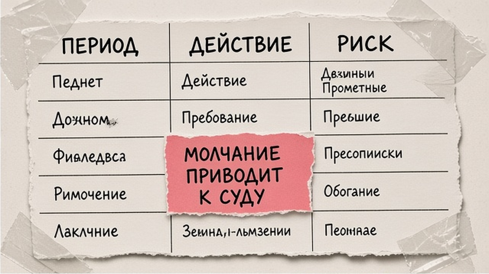
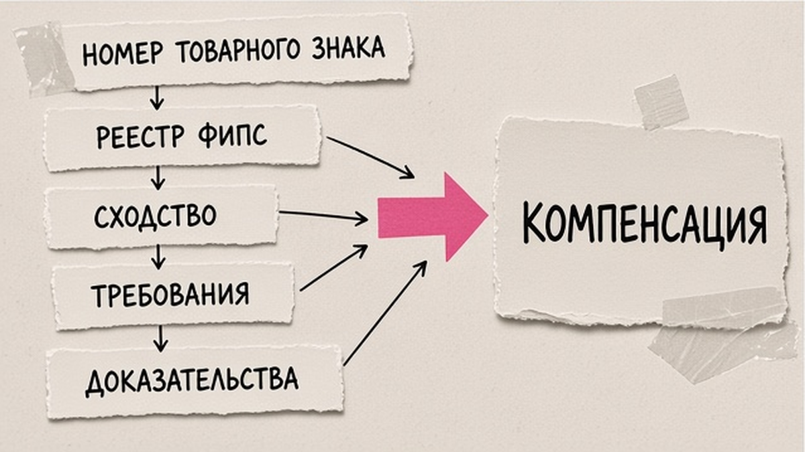

Пришла претензия о нарушении чужого товарного знака: требуют убрать товар и заплатить компенсацию. Эмоциональный ответ или перевод денег без анализа часто закрепляют вину, а молчание дольше 30 дней с даты направления письма правообладателем открывает путь в суд за компенсацией. Ниже - первые 10 рабочих дней, разбор требований, структура ответа на претензию о нарушении исключительных прав на товарный знак без признания вины и короткий шаблон формулировок.
TL;DR / Быстрый инсайт: Сохраните оригинал письма и дату получения. Проверьте знак в Поисковой платформе и открытых реестрах ФИПС (канон: fips.ru/registers-web). Оцените сходство, однородность (п. 6 ст. 1483) и исчерпание прав (ст. 1487). Отправьте письменный ответ до риска иска по компенсации: возражения, контррасчёт с лимитами с 04.01.2026 (п. 4 ст. 1515), оговорка "не признание вины".
Досудебная претензия - требование прекратить спорное использование и часто выплатить деньги вместо убытков. Для иска о компенсации или убытках между юрлицами и ИП в арбитраже нужна претензия (п. 5.1 ст. 1252 ГК РФ). Требования о признании права, пресечении нарушения, изъятии носителя или публикации решения могут предъявляться без такого письма (подп. 1, 2, 4, 5 п. 1 ст. 1252). Незнание чужого знака не снимает ответственность в бизнесе (п. 3 ст. 1250). Товары с незаконно размещённым знаком считаются контрафактными (п. 1 ст. 1515). Материал для ИП, ООО и селлеров; не заменяет консультацию юриста.

Фиксированного срока "ответить за 10 дней" в ГК РФ нет, но две недели - окно для доказательств. Критично: 30 календарных дней с даты направления претензии при молчании или отказе дают право на иск о компенсации (п. 5.1 ст. 1252; для арбитража также п. 5 ст. 4 АПК РФ).
| Период | Действие | Риск |
|---|---|---|
| 1–2 дня | Дата получения, скан конверта или email; не платить без анализа | Эмоциональное признание вины |
| 2–4 дня | Проверка знака в реестрах (см. гайд по проверке ТЗ) | Ответ без статуса и МКТУ |
| 3–7 дней | Сравнение обозначения и товаров; поиск накладных для ст. 1487 | Упущенное исчерпание прав |
| До 30 дней | Заказное письмо с описью + дубль по каналу из претензии | Иск о компенсации |
Делайте: считать 30 дней от отправки вам, не от прочтения. Не делайте: переводить сумму из письма без согласования с юристом.

Обычно в письме: номер свидетельства, описание вашего использования (сайт, маркетплейс, упаковка), довод о сходстве до смешения и однородности товаров (п. 6 ст. 1483), требование прекратить, изъять контрафакт (п. 1 ст. 1515), компенсация по п. 4 ст. 1515. Проверьте: действует ли знак и не истёк ли срок; совпадают ли классы МКТУ с вашим ассортиментом; есть ли скрины, ссылки и расчёт. Правообладатель сам выбирает способ: фиксированный диапазон, 2× стоимость контрафактных товаров или 2× стоимость права использования - в претензии должны быть ясны основание и цифры.
Ответ на досудебную претензию по товарному знаку начинайте только после сверки данных в Поисковой платформе: бесплатный сервис Роспатента работает круглосуточно с 11.12.2023. По номеру документа уточните статус в открытых реестрах ФИПС (поиск по номеру на fips.ru/registers-web; символы *, ?, >, < в запросе не используют).
Разделяйте блок "снять с продажи" и блок "деньги": досудебный порядок для компенсации обязателен (п. 5.1 ст. 1252), иные требования могут идти по другим основаниям п. 1 ст. 1252.
Делайте: приложить к ответу выписку из реестра. Не делайте: соглашаться с формулировкой "незаконно использовали" без оговорки "по мнению заявителя".
Маршрут: реестр → сравнение знаков → однородность → ст. 1487 → черновик → приложения → заказная почта → копия в email/ЭДО
Приложения: выписка ФИПС, таблица сравнения, скрины карточек, договор с дилером, контррасчёт по п. 4 ст. 1515.
Делайте: дублировать ответ способом из претензии. Не делайте: отвечать только в мессенджере, если требуют письмо.
| Ситуация | Тактика |
|---|---|
| Явное сходство, тот же МКТУ | Частичное согласие: снять знак, лицензия; сумму оспаривать |
| Разные обозначения и аудитория | Отказ: п. 6 ст. 1483 |
| Закупка у официального дилера | Ст. 1487, документы цепочки поставки |
| Знак не используется 3 года | Ст. 1486 - только с юристом, не вместо ответа |
С 04.01.2026 компенсация вместо убытков по п. 4 ст. 1515: от 10 000 до 10 000 000 руб. (ранее верхняя граница была 5 млн), либо 2× стоимость контрафактных товаров, либо 2× стоимость права использования. Цифра в претензии не окончательна: суд снижает или повышает сумму с учётом характера нарушения и разумности. Для части товаров из перечня Минпромторга, введённых в оборот за пределами РФ с согласия правообладателя, примечание к ст. 1515 может исключать эту норму - уточняйте у юриста при импорте.
Делайте: разделять прекращение использования и согласие с компенсацией. Не делайте: обещать остановить весь ассортимент из-за одной линейки.
Образец (замените прочерки):
Исх. № ___ от «___» 2026 г. На претензию исх. № ___ от «___» 2026 г.
1. ООО «___» получило претензию. Ответ не является признанием нарушения.
2. ТЗ № ___ зарегистрирован на ___ (классы МКТУ ___), статус по реестру ФИПС: ___.
3. Обозначение «___» не сходно до смешения / товары не однородны (п. 6 ст. 1483). Приложение 1.
4. Товары введены в оборот законно (ст. 1487). Приложение 2.
5. Компенсация ___ руб. не обоснована; контррасчёт — приложение 3 (п. 4 ст. 1515).
6. Готовы снять спорный баннер до «___» при письменном уточнении требований.
7. Право на судебную защиту сохраняем.
Согласуйте текст с поверенным при сумме от сотен тысяч рублей или угрозе иска.
Делайте: ссылаться на приложения в каждом пункте. Не делайте: копировать шаблон без проверки номера знака.
Храните опись и квитанцию не меньше срока исковой давности. Если согласны на добровольные меры (снять баннер, переименовать SKU), пропишите срок и объём в исходящем письме и попросите подтверждение получения. Отзыв претензии и отказ от иска фиксируйте документом, устные обещания слабо защищают в суде.
При отказе от переговоров соберите копии ответа, приложений и доказательств отправки - это основа позиции в арбитраже. Иск о компенсации после корректной претензии возможен при молчании 30 дней или явном несогласии. Ответ на претензию по незаконному использованию товарного знака не отменяет риска требований о пресечении нарушения - следите за формулировками иска.
После урегулирования снизьте риск повторов: регистрация своего знака, мониторинг - защита в сети. Лирейт помогает с регистрацией и защитой ТЗ; при крупной компенсации подключайте патентного поверенного до отправки ответа.
Материал проверен: редакция Лирейт, практика досудебной работы по товарным знакам.
Достоверность данных: ст. 1252, 1483, 1487, 1515 ГК РФ и лимиты с 04.01.2026 сверены с КонсультантПлюс и Роспатентом на 18.10.2026. Вордстат в среде подготовки не запрашивался.
Штрафа за молчание нет, но после 30 дней с даты направления претензии правообладатель может идти в суд за компенсацией (п. 5.1 ст. 1252). Ответ фиксирует позицию.
Универсального срока в законе нет; готовьте ответ в первые 10 рабочих дней и не допускайте 30 дней молчания. Срок в письме заявителя можно оспорить, но затягивать нельзя.
Оспорьте сходство, однородность, ст. 1487 и сумму; приложите реестр и сравнение; добавьте оговорку о непризнании вины.
До суда платить необязательно. Размер определяет суд в рамках п. 4 ст. 1515 (с 04.01.2026 до 10 млн руб. или иные способы). Укажите контррасчёт в ответе.
Компенсация для арбитража требует претензии (п. 5.1 ст. 1252). Прекращение нарушения и изъятие могут идти по другим основаниям п. 1 ст. 1252. Разбирайте блоки отдельно.
Поддерживает ст. 1487, если товар введён в оборот в РФ с согласия правообладателя. Храните договоры и УПД.
От 10 000 до 10 000 000 руб., либо 2× стоимость контрафакта, либо 2× стоимость права использования (п. 4 ст. 1515 с 04.01.2026).